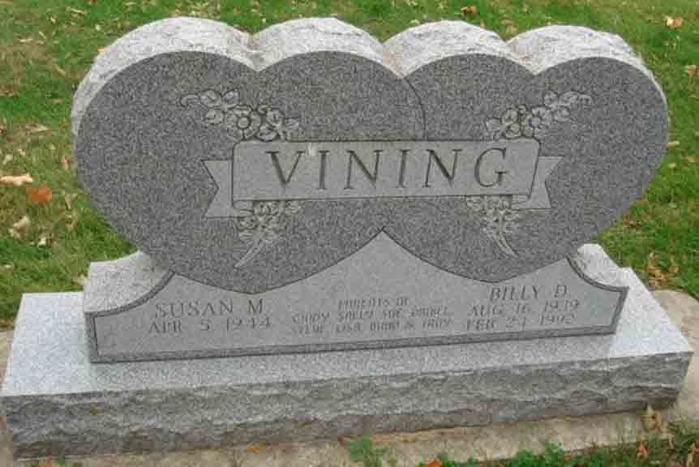

Documentation for Billy Dale Vining and (1) Joan Elaine Lockwood; (2) Susan M. [...]
Death Data
Headstone for Billy Dale Vining and Susan M. ([…]) Vining, in Riverside Cemetery, Charles City, Floyd County, Iowa (from Find A Grave):
